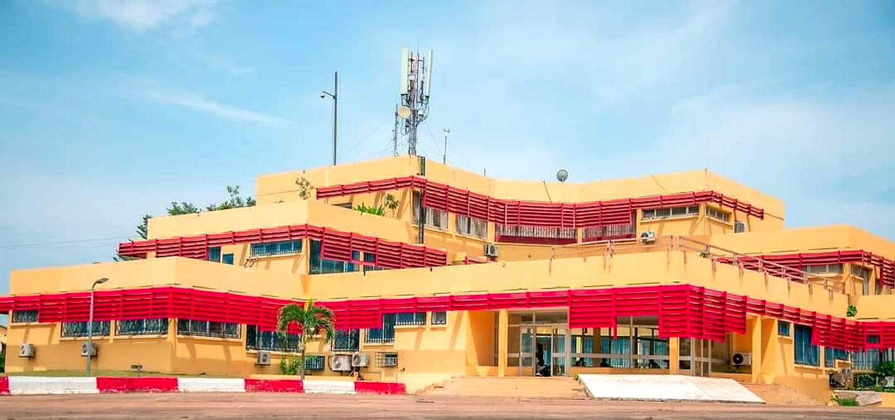
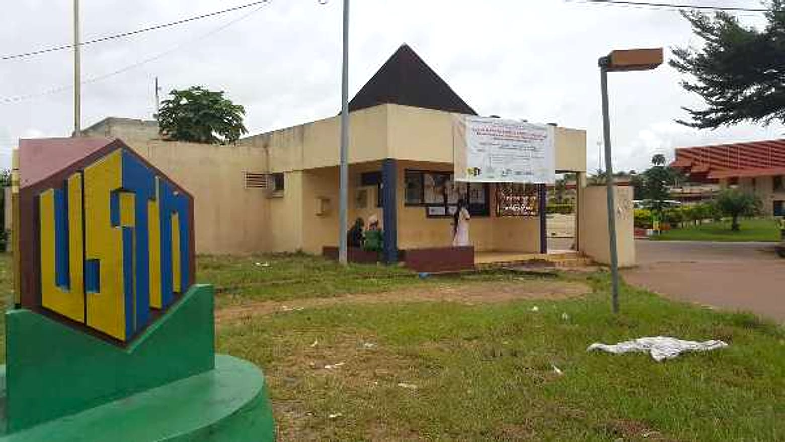

Université publique · Franceville · depuis 1986
Science, technique, innovation : l'avenir se construit à Masuku.
L'USTM forme à Franceville les scientifiques, les ingénieurs et les agronomes du Gabon : Faculté des Sciences, École Polytechnique de Masuku, INSAB et École doctorale.